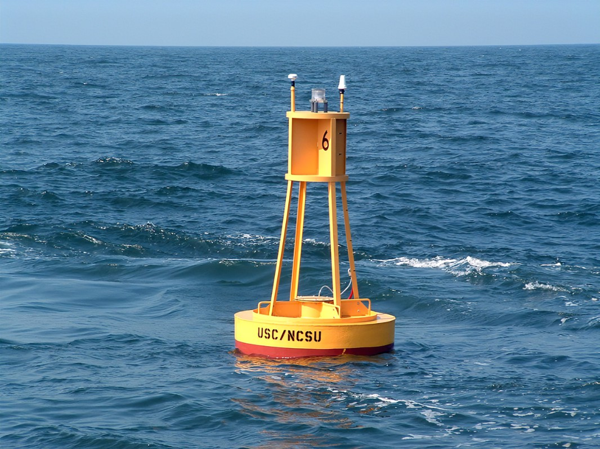

El Niño
El Niño and La Niña are complex weather patterns resulting from variations in ocean temperatures in the Equatorial Pacific. These two phenomena are opposite phases of what is known as the El Niño-Southern Oscillation (ENSO) cycle.
The ENSO cycle is scientific term that describes the fluctuations in temperature between the ocean and atmosphere in the east-central Equatorial Pacific. El Niño was originally observed in Southern America as unusually warm seawater.
El Niño in the Philippines usually starts between December and February. It is indicated by a delayed onset or early termination of the rainy season, and weak monsoon and tropical cyclone activity.
It is also associated with severe dry spells or droughts which can be just as damaging. A primary concern during El Niño season is water supply.
La Niña
La Niña is characterized by sea surface temperatures lower than average.
La Niña is caused by the upward movement of cold water by unusually strong trade winds and ocean currents in a process called upwelling.
La Niña in the Philippines is also correlated with destructive typhoons, heavy rainfall, and associated landslides and floods.
It is considered the counterpart to El Niño.
Signs of impending El Niño/La Niña
We can not see the signs of El Niño/La Niña. However, using sophisticated instruments, scientist can gather data that are subjected into different modelling analysis to predict and monitor different parameters that affect El Niño Southern Oscillation phenomenon.
MONITORING ENSO
FORECASTING ENSO
Technology Used in Prediction

SATELLITES
Satellites provide data on tropical rainfall, wind, and ocean temperature patterns, as well as changes in conditions for hurricane formation.

OCEAN BUOYS
They help in monitoring sea-surface and upper ocean temperatures.
Other tools used:
Preparedness and Mitigation
What to do before El Nino/La Nina
What to do during El Nino/La Nina